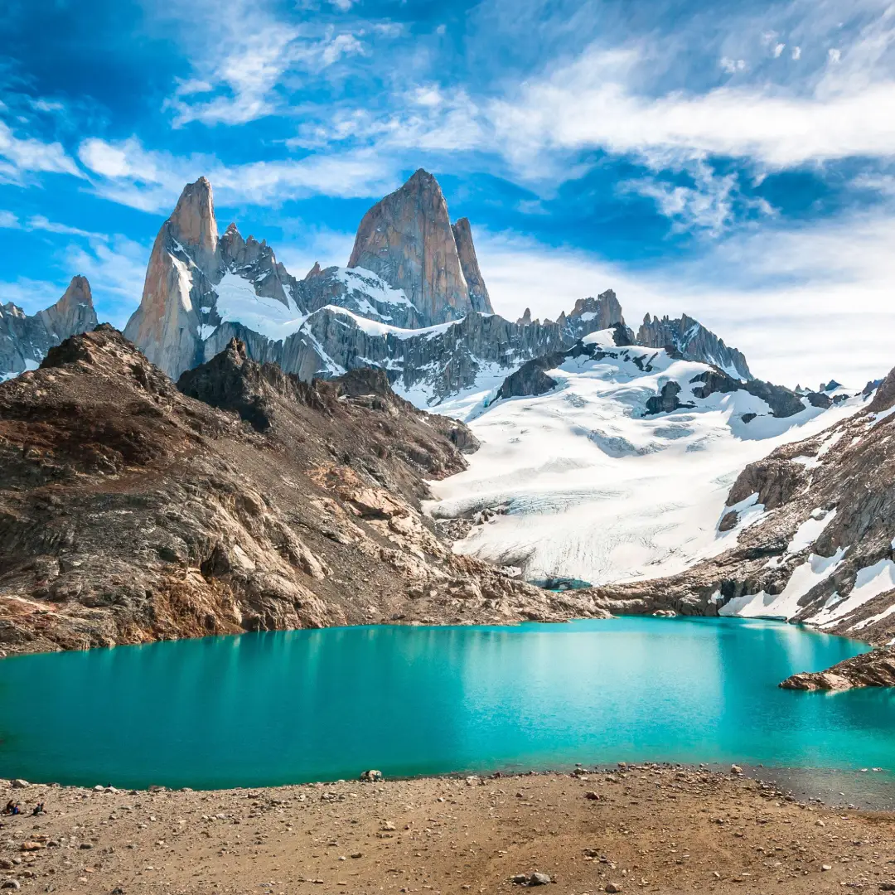

El Chaltén
Santa Cruz · Patagonia
Senderos al pie del Fitz Roy, lagunas y bosques en el Parque Nacional Los Glaciares.
Explorar destino
- Base para explorar
- El Chaltén
- Qué hacer
- Caminatas y fotografía
Elegí el recorrido según tu experiencia. Consultá el estado de las sendas en el Centro de Visitantes antes de salir.
Información oficial ↗